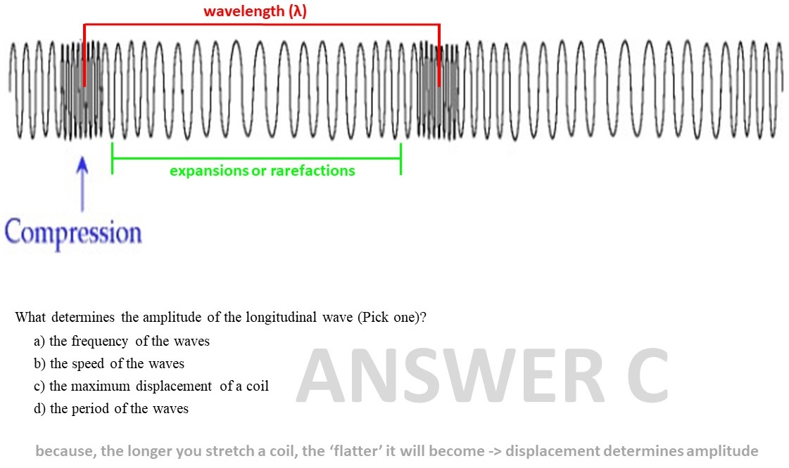

➤
➤
The graph below shows longitudinal waves passing through a spring
A) Use the diagram to show the
wavelength of the wave.
B) What is the name for the area between the compressions
C) What determines the amplitude of the longitudinal wave (Pick one)?
1) the frequency of the waves
2)
the speed of the waves
3) the maximum displacement of a coil
4) the period of the waves
